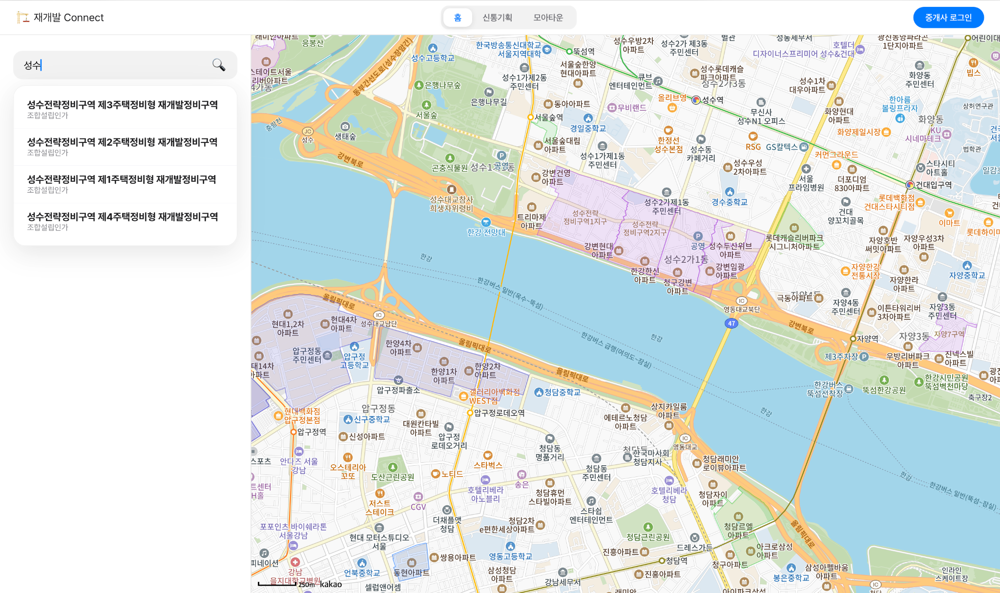
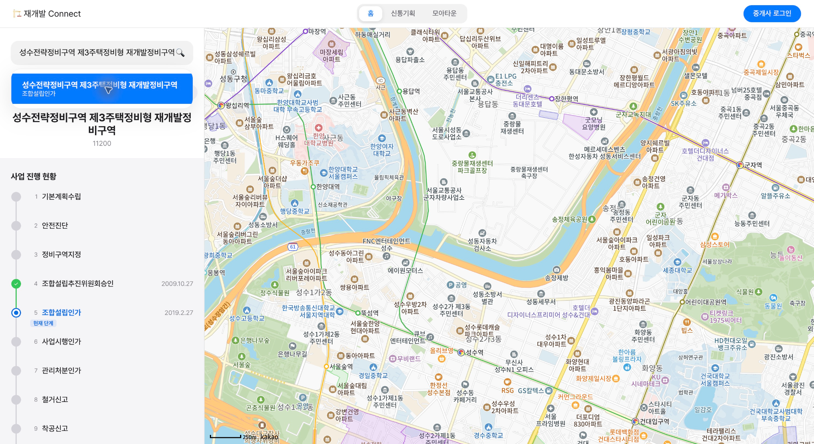

개인 풀스택 프로젝트
서울 정비구역 지도
사업장 정보와 연결된 440개 구역을 React 지도에서 탐색하고, 확인된 이력을 14개 기준 단계에 표시합니다.
- 담당
- React 지도 및 상세 화면, 조회 API, MySQL 모델링과 구역 매칭
- 사용 기술
- React / Kakao Maps / Spring Boot / MySQL
시작한 이유
아버지의 재개발 컨설팅 업무를 보며 구역 경계와 사업 이력을 한 화면에서 확인할 수 있으면 좋겠다고 생각했습니다. React에서 Kakao Maps에 경계 폴리곤을 그리고, 구역 선택을 상세 API 호출로 연결했습니다. 서버는 MySQL에서 사업 이력을 가져오고, 화면은 그 응답을 14개 기준 단계에 맞춰 보여줍니다.
실제 실행 화면
2026-03-19 백업을 복원한 로컬 실행 화면입니다. 이미지를 선택하면 원본 크기로 볼 수 있습니다.


이름이 비슷한 구역은 어떻게 구분할까?
같은 이름이 여러 구역에 대응하면 다른 구역의 인가 날짜가 표시될 수 있습니다. 자동 매칭에서는 이름을 정규화해 후보를 찾고, 완전 일치 후보가 중복되면 연결을 보류합니다. 부분 일치에서도 후보 간 점수 차이를 확인합니다.
지도 목록은 사업장 정보와 연결된 구역만 페이지 단위로 조회합니다. 상세 화면에서는 14개 기준 단계에 API 이력을 대응시켜 현재 단계와 확인된 날짜를 표시합니다.
실제 데이터로 확인한 흐름
전체 구역 2,302건 중 사업장 정보와 연결된 440개 구역을 목록 API에서 조회했습니다. 저장된 단계 이력은 1,869건입니다. 수치는 2026-03-19 백업을 MySQL 8.0.44에 복원한 로컬 검증 기준입니다.
브라우저에서 배경 지도와 구역 경계를 확인하고, ‘성수’ 검색 결과에서 제3구역을 선택해 상세 화면으로 이동했습니다. 목록, 검색, 상세 API는 모두 HTTP 200으로 응답했습니다.
선택한 구역의 API 날짜 두 건이 화면에 일치하게 표시되는지 확인했습니다. 14개 단계는 화면의 기준 구조이며, 이 구역의 실제 이력은 2건입니다. 기록이 없는 단계는 날짜 없이 비활성 상태로 표시했습니다.
시연 데이터는 백업 시점의 기록이며 현재 사업 현황을 보장하지 않습니다. 검증 범위와 결과